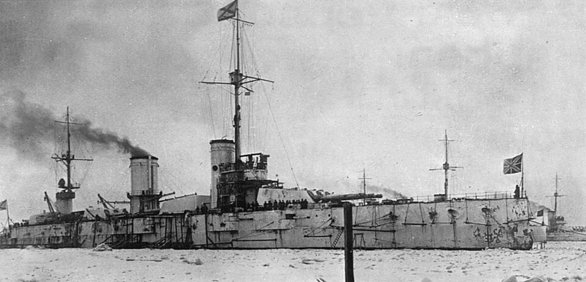

Marat / Petropavlovsk
Acorazado de Unión Soviética, perteneciente a la clase Gangut. Entró en servicio como Petropavlovsk de la Armada imperial rusa y pasó a la Armada soviética con el nombre Marat.

Diseño y función
Marat / Petropavlovsk pertenecía a la clase Gangut. Combate artillero y apoyo a la defensa costera. Sus prestaciones se detallan en la tabla técnica, con las fechas o condiciones disponibles en la referencia.
Operaciones y trayectoria
Entró en servicio como Petropavlovsk de la Armada imperial rusa y pasó a la Armada soviética con el nombre Marat. Prestó apoyo artillero durante la defensa de Leningrado.
Destino final y conservación
Gravemente dañado por un ataque aéreo en Kronstadt en septiembre de 1941. Parte de su artillería continuó funcionando como batería fija; el casco fue desguazado después de la guerra.